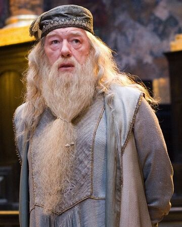

Hogwarts School
Faculty

Albus Percival Wulfric Brian Dumbledore is the headmaster of the wizarding school Hogwarts. As part of his backstory, it is revealed that he is the founder and leader of the Order of the Phoenix, an organisation dedicated to fighting Lord Voldemort, the main antagonist of the series.

Professor Minerva McGonagall, O.M. (First Class),[13] was a Scottish half-blood witch, the only daughter of Muggle Robert McGonagall and witch Isobel Ross. Minerva attended Hogwarts School of Witchcraft and Wizardry and was Sorted into Gryffindor House, but it took the Sorting Hat five and a half minutes to decide if she was Gryffindor or Ravenclaw, which made her a Hatstall.